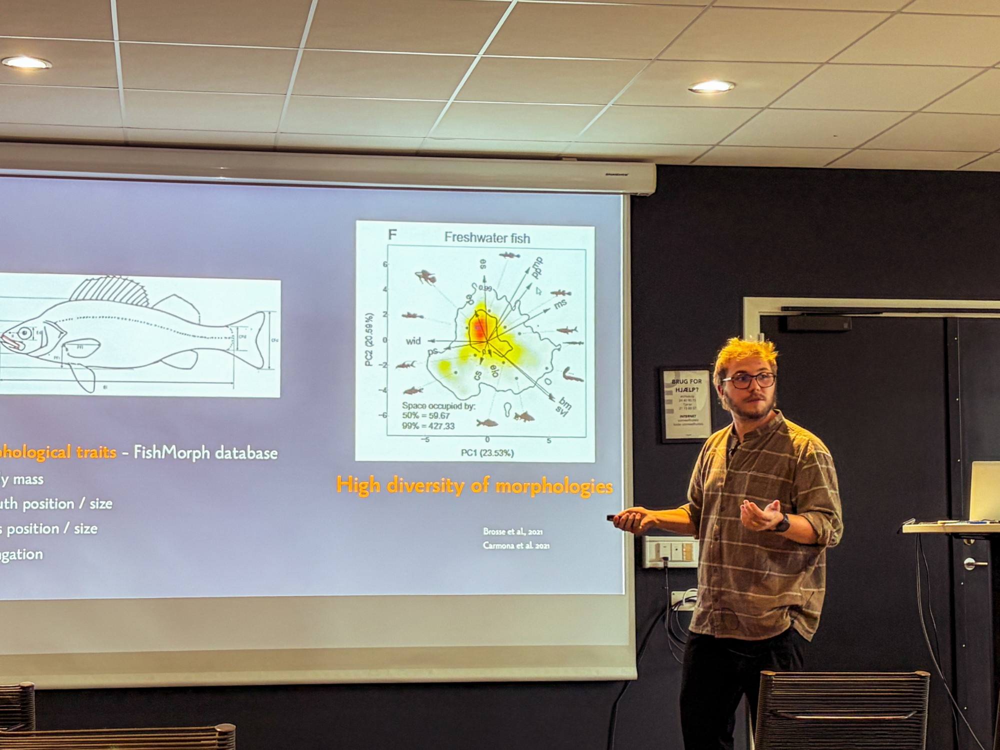

Sep 2026
Talk
Human targeting of morphologically unique fishes amplifies the risk of functional erosion
NSO – GfÖ Ecology conference · Odense, Denmark

Talks, posters and outreach

NSO – GfÖ Ecology conference · Odense, Denmark

Ecology & Behaviour · Montpellier, France
Fête de la Science · Mur-de-Barrez, France
Toulouse, France
Toulouse, France